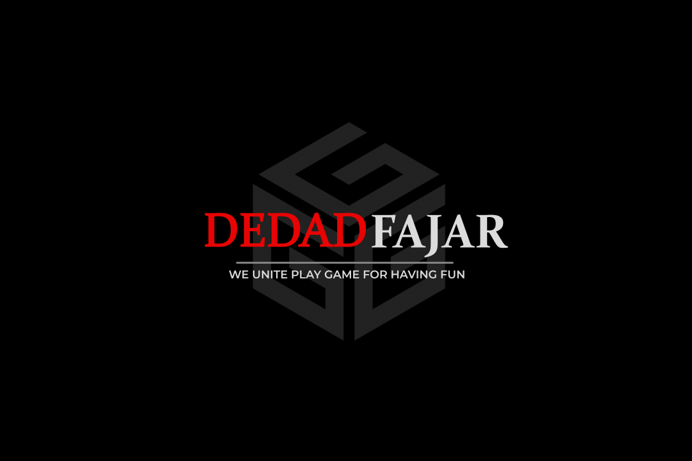

Official Website of Dedad Fajar Game & Dedad Fajar Indonesia
Beranda
Website ini merupakan representasi dari konten yang telah dibagikan pada dua channel di platform
YouTube. Dua channel YouTube tersebut, yakni Dedad Fajar Game dan Dedad Fajar Indonesia.
Dua channel itu dibangun oleh seorang yang berkelahiran Indonesia dari Nusa Tenggara Barat,
ia bernama Muhammad Dedad Fajarsodiq Akastangga.
Pada pertengahan tahun 2018, ia membuat channel
YouTube Dedad Fajar Game. Sesuai dengan namanya, channel ini berfokus pada berbagai game android.
Namun dalam setahun terakhir, channel ini telah melebarkan sayapnya sehingga konten yang diberikan
tak hanya mengusung game android tetapi juga game laptop/pc. Tahun 2020 merupakan tahun ketika Covid-19
mulai melanda dunia, terutama Indonesia. Hal ini membuat orang-orang terpaksa untuk diam di rumah dan
mengerjakan segala aktivitas perkerjaan dan bersosial melalui dunia maya. Karena tuntutan untuk lebih
produktif walaupun didalam rumah, maka Dedad Fajar membuat channel Youtube baru dengan nama Dedad Fajar
Indonesia. Channel YouTube barunya ini berbeda dengan sebelumnya yang mengusung tema gaming. Dedad Fajar
Indonesia berfokus pada bidang pengajaran dalam hal ini memberikan tutorial seputar android.
Gaming

Dedad Fajar Game dibuat pada tanggal 24 Mei 2018 dan tetap aktif menyuguhkan konten hingga sekarang.
Setelah aktif berkarya selama dua tahun pertama, channel gaming ini terdaftar dalam YouTube Partner Program (YPP).
Channel ini naik daun karena satu video yang dibuatnya tentang GTA San Andreas berhasil mencapai 244rb penonton setelah 17 bulan
dipublikasikan. Namun pada akhirnya video tersebut diarsipkan setelah adanya perubahan kebijakan yang dirilis oleh
YouTube. Saat ini konten yang banyak dipublikasikan adalah gameplay Forza Horizon 5 dan performa gaming pada laptop
Acer Nitro 5 AN515-57 RTX 3050. Tak hanya laptop, ia juga mempublikasikan performa gaming Samsung Galaxy A52s 5G.
Tutorial
Dedad Fajar Indonesia dibuat pada tanggal 2 Juli 2020 dan tetap aktif menyuguhkan konten hingga sekarang.
Hanya butuh empat bulan, channel tutorial ini berhasil terdaftar dalam YouTube Partner Program (YPP). Channel ini
dapat berkembang cepat karena didukung oleh kondisi dunia yang membuat orang-orang lebih lama menggunakan YouTube.
Tak hanya itu, penonton yang sangat bersemangat untuk menantikan video tutorial-tutorial terbaru membuat channel ini sangat
berkembang. Walaupun isi video dan nama channel terdapat label Indonesia, penonton channel ini juga ditonton oleh penonton
dari berbagai negara, seperti India, Brazil, Filipina, Malasyia, Vietnam, dan Aljazair.